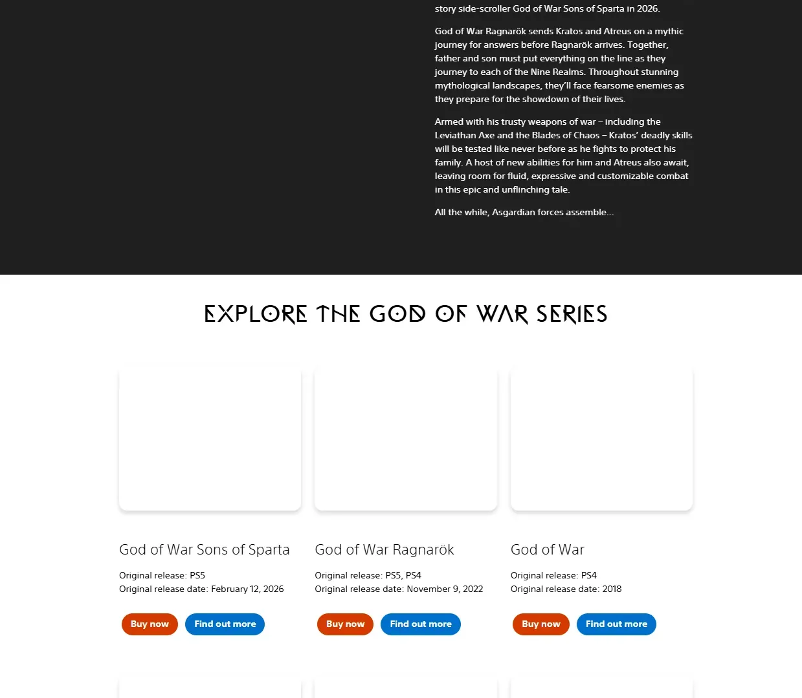
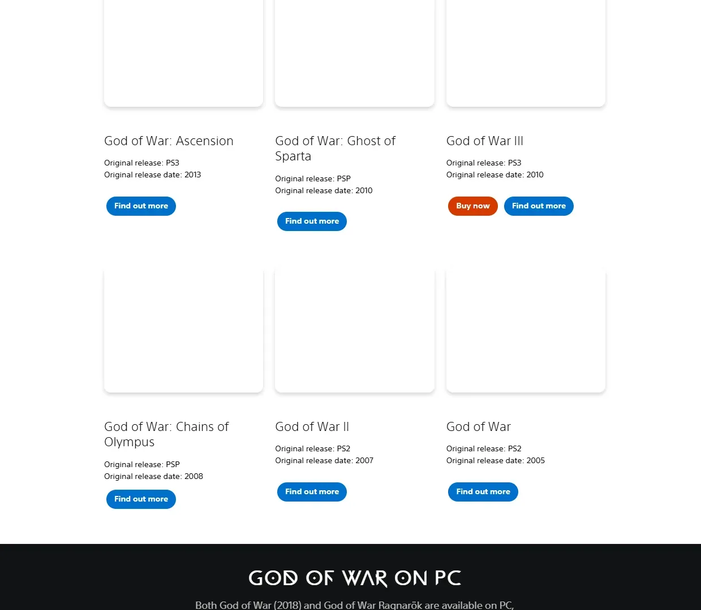
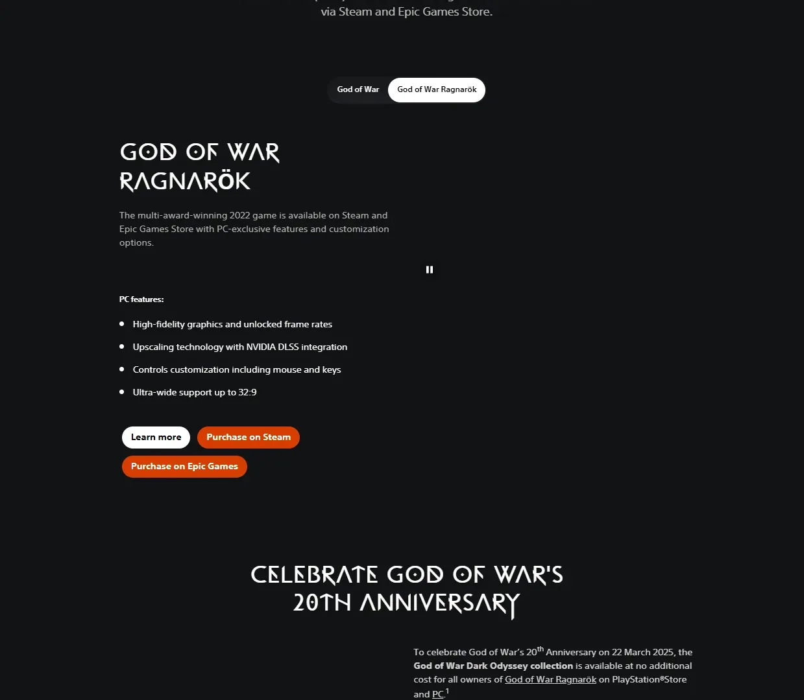
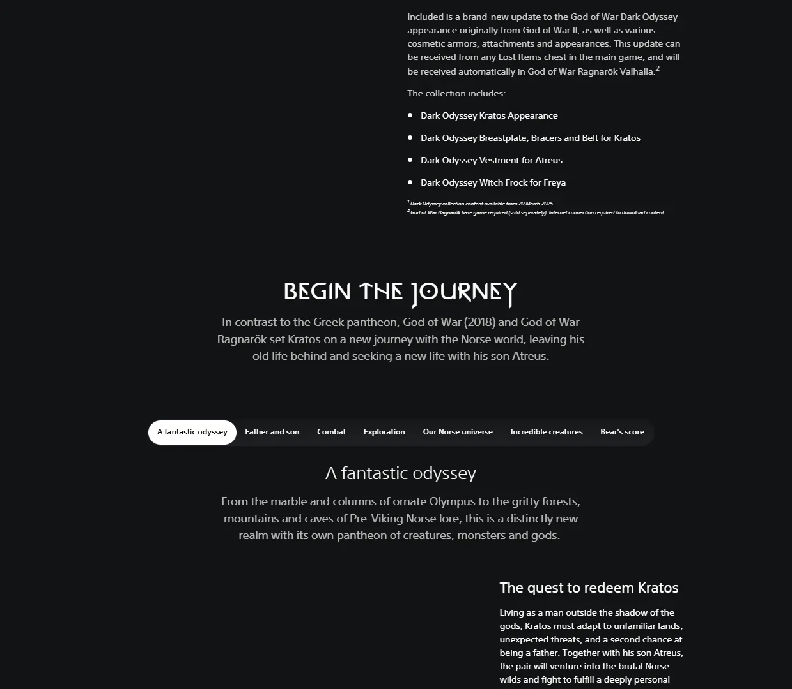
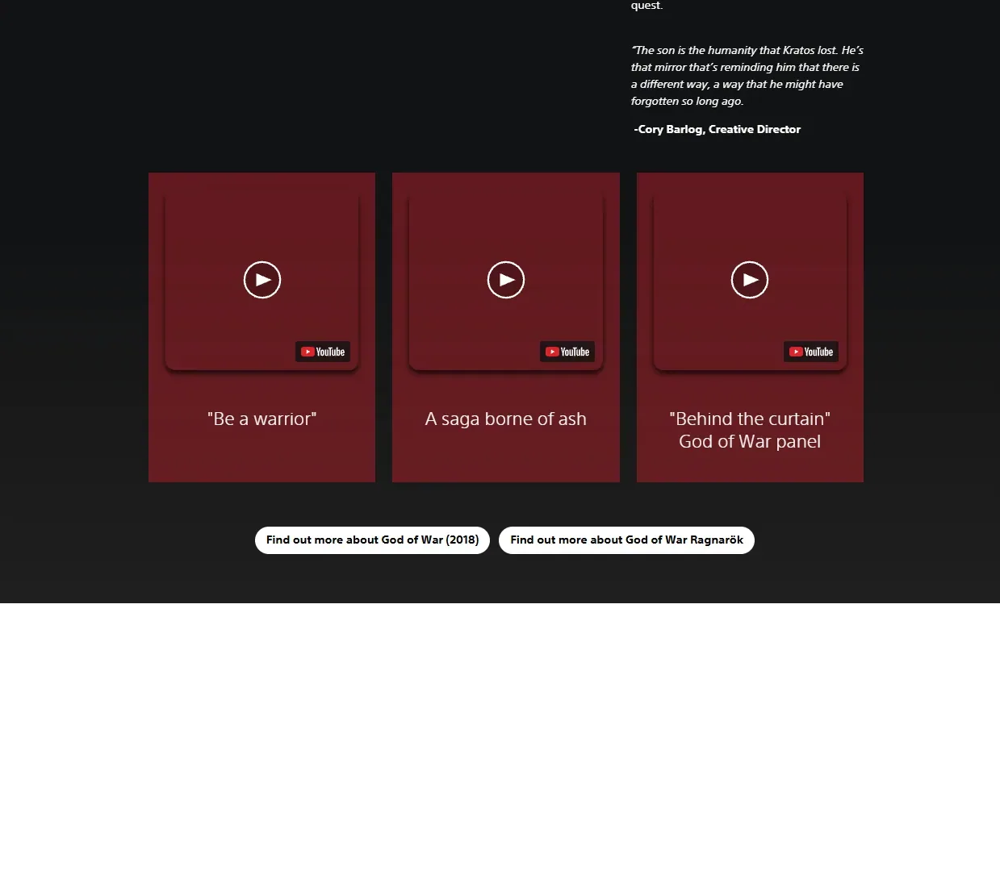
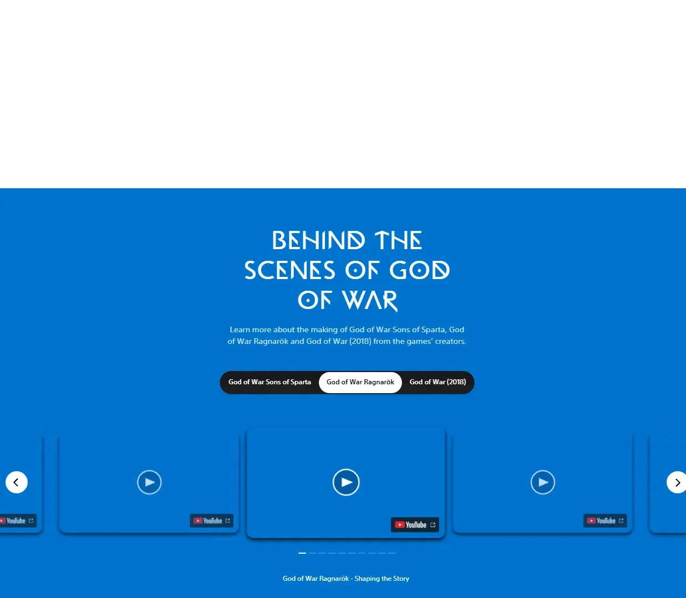
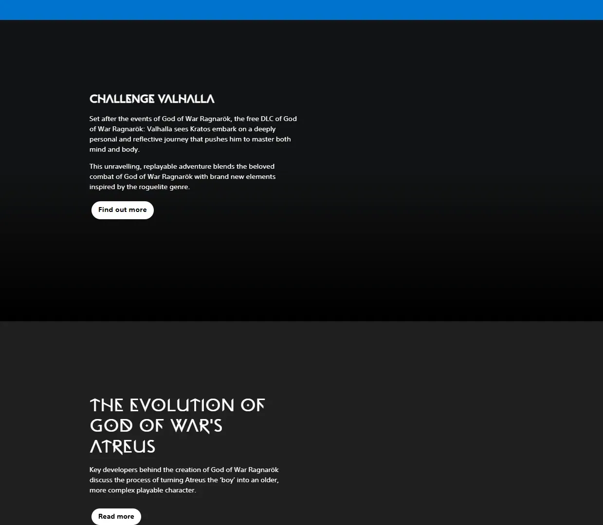
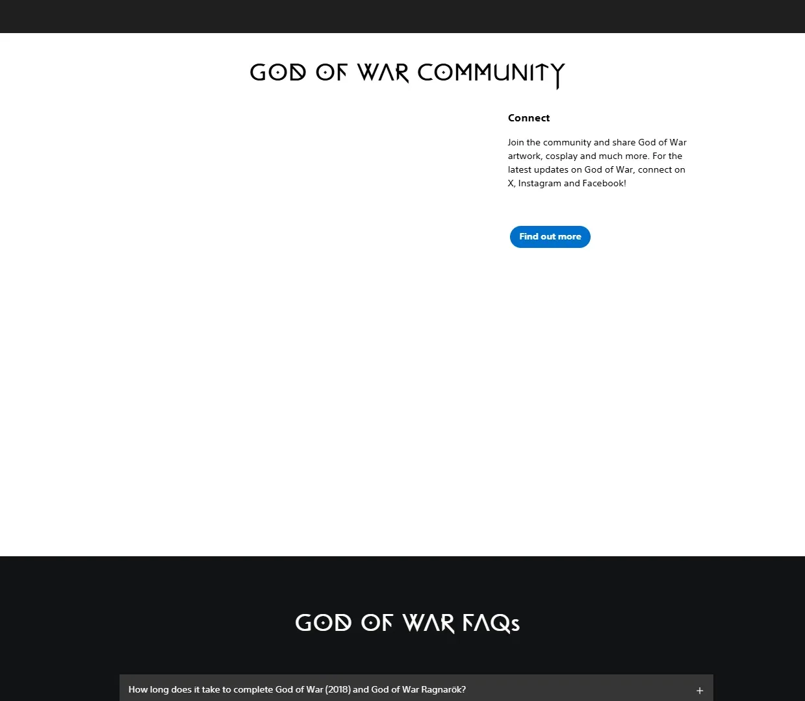
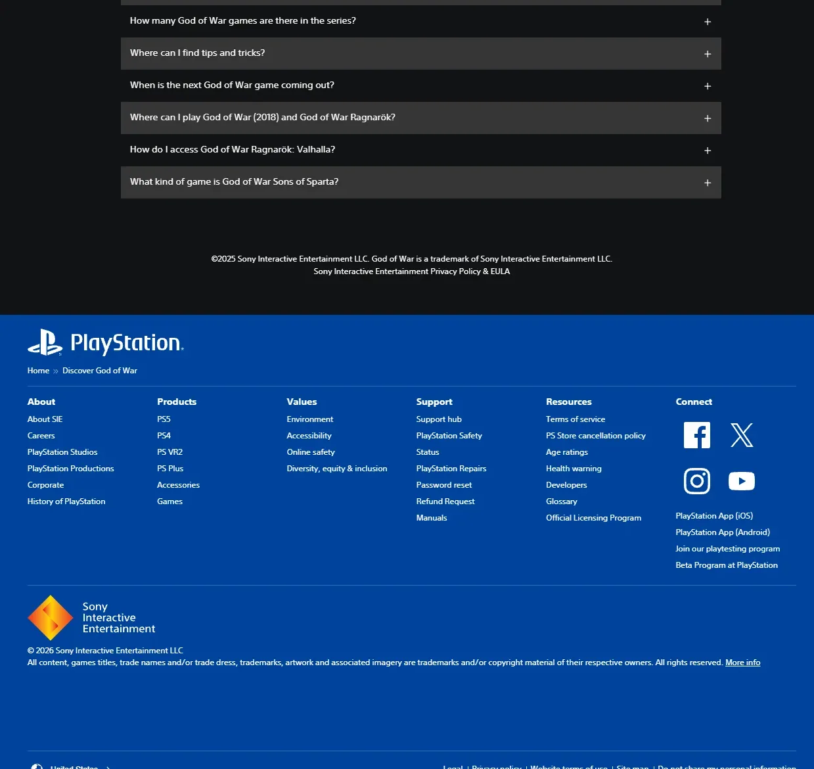

圣莫妮卡工作室北欧神话题材动作冒险，PS 旗舰级大作 PC 移植。










想象一片北欧冰雪松林——远处积雪的山巅消失在雾里，近处斧头劈柴的声音是这个世界仅剩的温暖。一个满身伤疤、比树干还粗的男人正在教他的小儿子射箭——奎托斯，曾经屠尽奥林匹斯十二主神的斯巴达战神，如今只想当一个安静的父亲。亡妻的骨灰装在一只皮囊里，遗愿是撒到九界最高的山巅。你以为这不过是一趟安静的登山旅行——直到家门口来了一个刀枪不入的陌生人。
那个陌生人叫巴德尔——阿萨神族派来的追猎者，一拳把你的屋顶掀飞。从这一刻起镜头再也没有切过——整个游戏从开场到结局是一个不间断的长镜头。你带着儿子阿特柔斯划船穿过九界之湖、翻越冰川、走进光精灵殿堂和火焰竞技场。路上你遇到一条缠绕世界的巨蛇——它的头比山还大，它的声音让时间倒流。你教儿子用弓、教他读符文、教他克制怒火——因为你比任何人都知道愤怒会通向什么。
那柄你扔出去又召回的利维坦之斧，冰霜拖尾每次回手时都像在提醒你——这是冻结愤怒的武器，不是释放它的；那条混沌双刃被你锁在地板下整整几年，直到故事逼你不得不再次点燃火焰；那个你一路叫着「Boy」的儿子，结局时他的身份揭示比任何 Boss 都更让你震动。这不是一个关于杀神的故事，是一个关于「一个怪物如何学会做父亲」的故事——斧头已经在你手里了，你打算先去哪个界？
北欧壮美 × 一镜到底，是 Santa Monica Studio 把北欧神话的自然壮美（冰川、巨树、远古遗迹）和电影级长镜头叙事反直觉地塞进一款动作游戏里的混血美学。底色是写实北欧自然——冷蓝色的冰雪世界；变异在于全程无剪辑镜头要求每一帧都具备电影构图水准。色彩锁定冰霜蓝 + 火焰橙 + 矮人金三色组合。整体调性介于《指环王》的中古壮美和《荒野猎人》的写实自然之间——既神话又真实。
「北欧神话+电影化游戏叙事」这条线的演化跨越了近半个世纪。1978 年北欧神话开始通过桌游《龙与地下城》和1977 年的《指环王》动画版进入流行文化。2001 年彼得·杰克逊《指环王》电影三部曲把中古奇幻视觉推到工业巅峰。2005 年初代《战神》以希腊神话为底，建立了「巨物 Boss 战+暴力美学」的品类认知。2014 年《鸟人》电影以伪一镜到底叙事获奥斯卡；2015 年《荒野猎人》用自然光+长镜头把严寒荒野拍到极致。2018 年《战神》把这两条线（北欧神话 + 一镜到底）合流——重新定义了 3A 动作游戏的视觉与叙事标准，PS4 时代最高评分游戏之一。
基于体验清单 · 审美偏好 · IP故事三维度综合选出